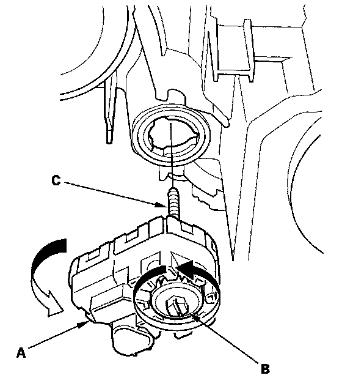
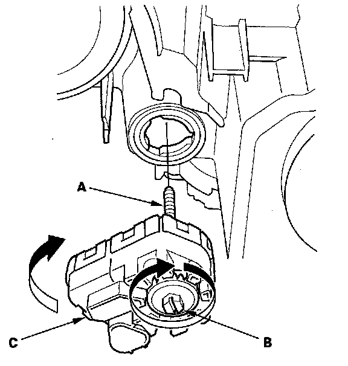

Headlamp Alignment Actuator: Service and Repair
Headlight Leveling Motor ReplacementRemoval
1. Remove the headlight assembly.

2. Turn the headlight leveling motor (A) 45° counterclockwise.
3. Turn the adjuster (B) of the headlight leveling motor until the headlight leveling motor shaft (C) is removed from the headlight.
Installation

1. Insert the headlight leveling motor shaft (A) into the headlight housing, then turn the adjuster (B) until the shaft connects to the headlight.
2. Turn the headlight leveling motor (C) 45° clockwise to install to the headlight.
3. Tighten the adjuster until fully it is secure, but do not over tighten, then back it off 9 turns.
4. Insert the headlight in the reverse order of removal.
5. After installing, do the headlight leveling motor initial position learning procedure.